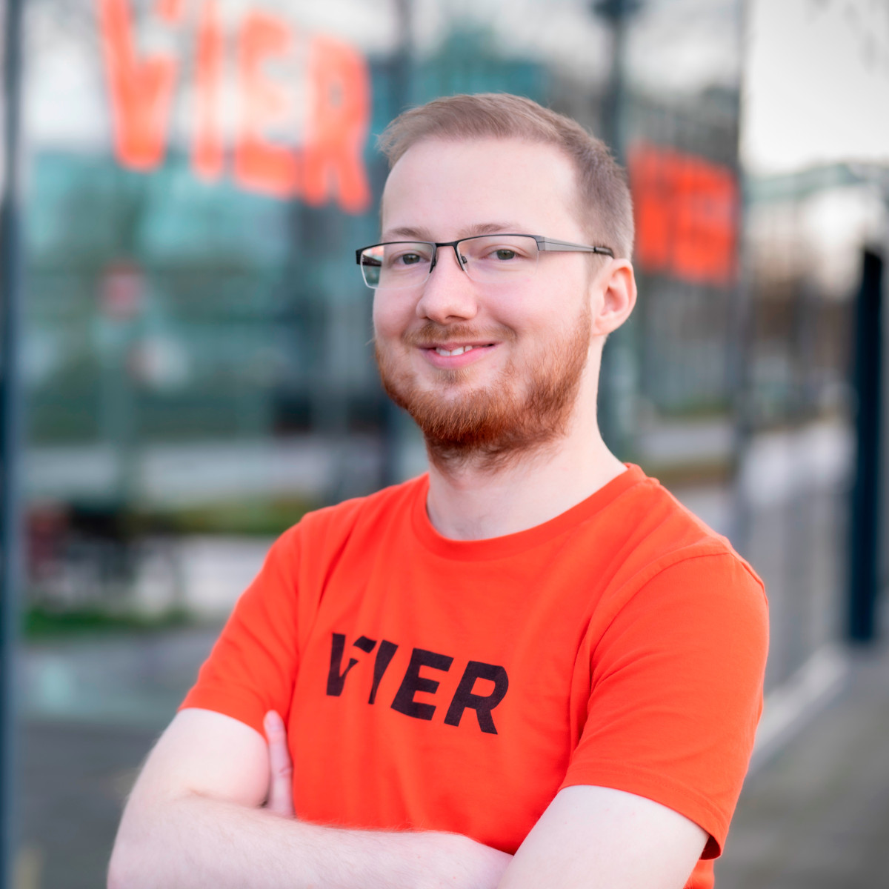

About Me
Phillip Schichtel
Karlsruhe
Github
Website
Mobile
Skype
phillip.schichtel

Education
08/1999 - 07/2003
St. Helena Grundschule, Neumagen-Dhron, Germany
08/2003 - 01/2010
Nikolaus-von-Kues-Gymnasium, Bernkastel-Kues, Germany
02/2010 - 06/2011
Friedrich-Spee-Realschule, Neumagen-Dhron, Germany
Degree: Mittlere Reife (2.5)
09/2011 - 07/2013
Carl-Bosch-Schule, Heidelberg, Germany
Specialization: Communication and Design
Degree: Fachhochschulreife (1.5)
10/2013 - 09/2016
DHBW Mannheim, Mannheim, Germany
Field of study: Computer Science
Partner company: Amadeus Germany GmbH
Degree: Bachelor of Science in Computer Science (1.9)
10/2016 - 09/2017
Karlsruhe Institut of Technology, Karlsruhe, Germany
Field of study: Computer Science
Experience
05/2012 - 06/2012
Intern at Mindnet-Systemhaus GmbH
Implementing and customizing websites based on customer requirements.
Technologies: PHP
09/2012
Intern at ScalaIT
Implementing and customizing websites based on customer requirements.
Technologies: PHP
05/2013
Intern at Amadeus Germany GmbH
Automating and documenting Amadeus Social Media Suite setup.
Technologies: Bash
08/2013 - 10/2013
Working Student at Amadeus Germany GmbH
Designing and prototyping new Amadeus Social Media Suite backend administration pages.
Technologies: HTML/CSS, JavaScript, Wireframing
02/2014 - 04/2014
Working Student at Amadeus Germany GmbH
Researched solutions for server configuration management and automation, example automation of NTP services using Puppet for the internal IT department.
Technologies: Linux, Puppet
07/2014 - 08/2014
Working Student at Amadeus Germany GmbH
Migration of Amadeus Social Media Suite backend administration pages to the Bootstrap UI framework.
Technologies: HTML/CSS, PHP, Wireframing
11/2014 - 02/2015
Working Student at Amadeus Germany GmbH
Designed and prototyped a showcase application to show Amadeus Solutions to customers during presentations and fairs.
Technologies: HTML/CSS, JavaScript, Java 8 with Java EE on JBoss/Wildfly
05/2015 - 08/2015
Working Student at Amadeus SAS
Implementing automatic analysis of the Amadeus-internal issue database to find relations between issues using information retrieval and machine learning methods.
Technologies: NodeJS, AngularJS, MongoDB, MapReduce
09/2015 - 05/2016
Student at DHBW Mannheim
A research paper about optimizing traffic signal control systems in order to increase throughput without increasing costs using machine learning approaches to find traffic patterns and a stress model to control the signals. A prototype simulation has been developed using MATSim.
Technologies: Java, MATSim
11/2015 - 02/2016
Working Student at Amadeus Germany GmbH
Designed a generic API to display interactive plane seat maps including a reference implementation in collaboration with the Swedish customer Ticket.se. Since mid 2017 known as Amadeus Plug & Play Seat Maps.
Technologies: JavaScript, Bundled Web Services (Amadeus product)
05/2016 - 09/2016
Working Student at Amadeus Germany GmbH
Bachelor thesis about the syntactical and semantical verification of web services in order to assist root cause analysis processes.
Technologies: Amadeus internal Java frameworks
09/2016 - 08/2019
Freelancer at bolzfabrik GmbH
Infrastructure consulting for their product Taktikr (taktikr.com), code quality supervision and feature development on both backend and frontend sections of the application.
Technologies: PHP, eZ Publish, Symfony, JavaScript
10/2016 - 02/2017
Working Student at Amadeus Germany GmbH
Research and implementation of UI usage and performance analystics for the Sales Section module of the Selling Platform Connect product.
Technologies: JavaScript, Aria Templates
02/2017 - 09/2017
Working Student at Amadeus Germany GmbH
An Amadeus-global R&D project investigating code generation approaches for various Amadeus projects to increase overall consistency and quality of code.
Technologies: Xtext and related tooling, Scala
10/2017 - 10/2019
Software Developer at Rockwell Automation Solutions GmbH
Developing Industry 4.0 solutions for various international customers as part of the ISPB Delivery team. Additionally responsible of a medium-sized VMWare-based server cluster as well infrastructure consulting in various international customer projects
Technologies: ProductionCentre, PharmaSuite, Java, JBoss, Kotlin, Pnuts, Xtext, VMWare / vSphere, Docker
Since 10/2019
Software Developer at Lindenbaum GmbH, later merged into VIER GmbH
Developing the micro service architecture behind Cognitive Voice Gateway and other voice related technologies.
Skills
Languages
- German (native)
- English (fluent)
Technologies
Advanced:
Java, Maven, Git, PHP, JavaScript
Intermediate:
Linux, Scala, C, Puppet, C#, Go, SQL, Docker
Basic:
IT Security, Unity3D, Android, Network Programming, Parallel Programming, native WebGL, Kubernetes
These lists are intentionally coarse and might be wildly outdated or incomplete. Feel free to ask for specifics.
Open Source
Active collaboration with various open source projects ranging from software libraries to Linux distributions on various social coding platforms, mailing lists and IRC networks.
Many smaller self-built software components are openly released, some of which have users world wide.
Consulting
Various projects involved requirements engineering and consulting services with international customers, ranging from passive troubleshooting support over systems architecture consulting to implementation workshops.
Activities
2009
Winner of the ProCup at the University Trier
(see procup2009.uni-trier.de)
Since 2010
Server administrator of the Cube Island community (cubeisland.de), owner since 2014.
2011
Workshop: Mobile App-Entwicklung of SRH Heidelberg's IT Summerschool
2013 - 2020
Attended multiple game jams, both remote and on-site.
Results of these can be seen at github.com/Banana4Life and on the Website at banana4.life.
Since 2015
Co-Founder of CuByte (cubyte.net). Managing a growing server cluster for customer applications.
Since 2018
Conception, implementation and on-going maintenance of the office and telephony infrastructure of the Sanitätshaus Schichtel.